Gesse est un hameau sur la départementale 118, sur les bords de l'Aude. En remontant l'Aude depuis les gorges de Saint Georges, ce sont les premières maisons autres que des usines hydroélectriques... (En effet, on peut voir, après l' usine de Saint Georges, 2 autres usines Hydroélectrique - celles de Nentilla et celle de Gesse - ainsi que la prise d'eau de Gesse - pour l'usine de Saint Georges - , mais aucune maison d'habitation autre que celle des gardiens de ces usines).
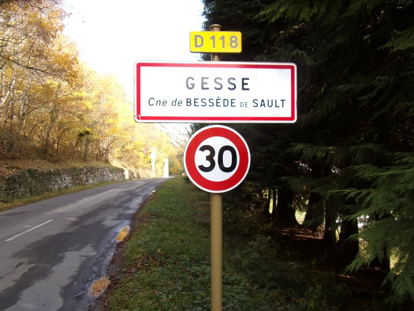Panneau d'entrée dans l'"agglomération" de Gesse
Commune de Bessède de Sault - le village de naissance de mon arrière grand-père
Les dernières maisons du village et le château en fond
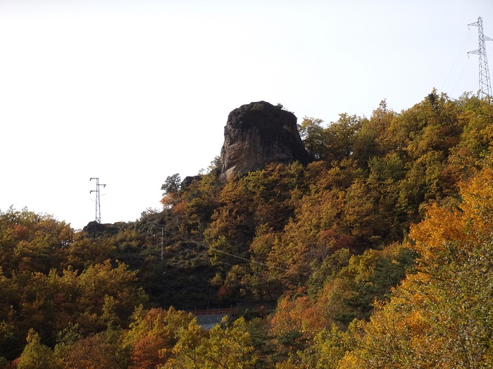Piton rocheux, particularité de Gesse
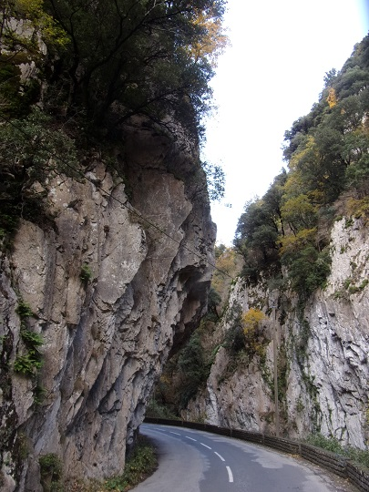Gorges à l'entrée de la vallée en amont
Le château de Gesse vu depuis la pisciculture

Carte postale ancienne double issue du site du SESA
La RD 118 suit le cours de l'Aude et donc traverse Gesse
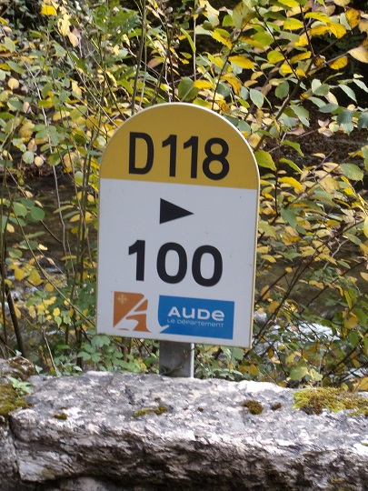la borne 100 de la RD 118 est à Gesse
Cette usine hydroélectrique a été construite près de la prise d'eau de l'usine de St Georges
La prise d'eau de l'usine de St Georges prise en photo du coté de la RD 118
(de l'amont vers l'aval avec le détournement vers les canalisations qui conduisent une partie de l'eau à l'usine - voir sur la dernière photo, au fond, la passe à poisson qui a été prévue dès l'origine de ce barrage)
La pisciculture de Gesse était gérée par la fédération de Pêche de l'Aude pour réaleviner la rivière à la veille des ouvertures de pêche, en truite arc en ciel ou fario
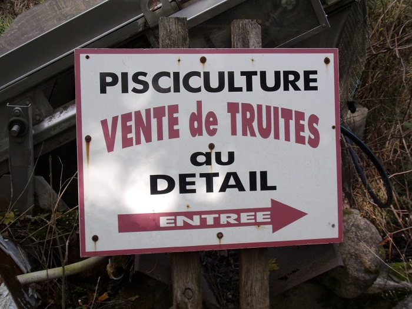 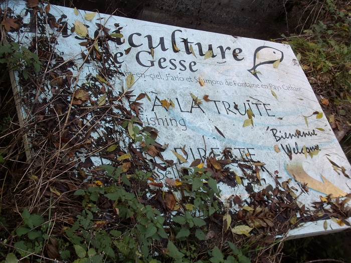Panneaux d'entrée de la pisciculture de Gesse
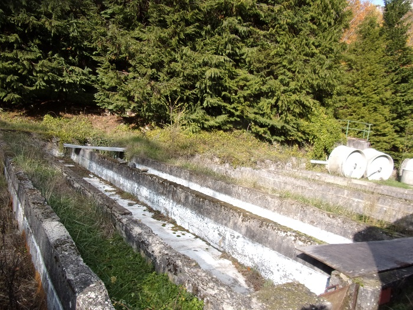 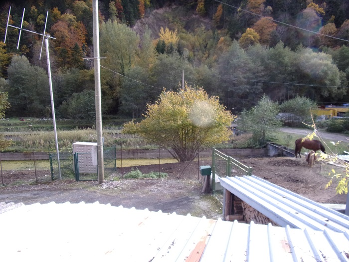Anciens bacs à poissons de la pisciculture
En septembre 2020, le seuil de Gesse, construction en ciment permettant l'alimentation en eau des bassins de la pisciculture, a été démantelé pour permettre une circulation plus facile des sédiments et des poissons... (objectif affiché par l'agence de l'eau : restaurer la continuité écologique).
Voir sur Wikipédia Gesse hameau de l'Aude que j'ai publié le 08/08/2021.
Sur cette carte de 17181 Gesse apparait sous le nom de "Moulin de Ges" en lien avec le moulin farinier qui existait depuis déjà de longues années en bord d'Aude

Collection de Thierry Meynier


 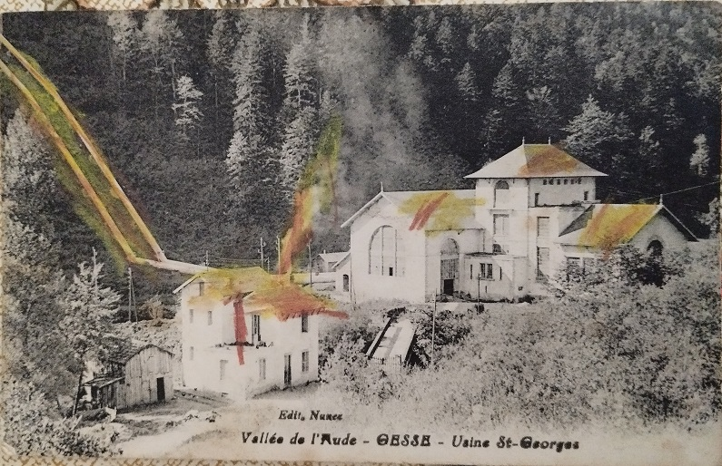
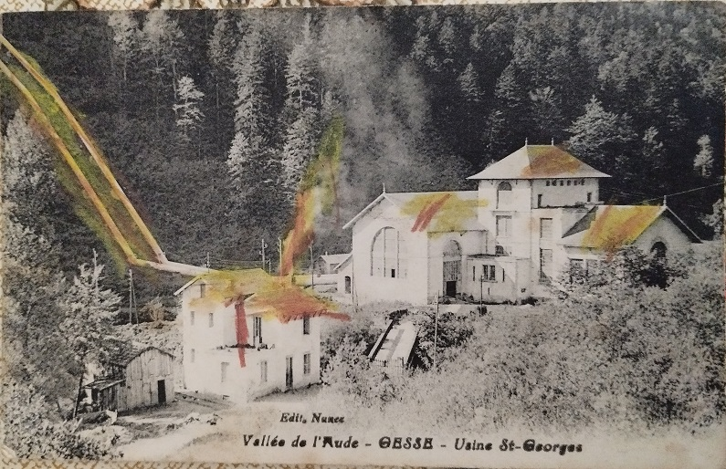


 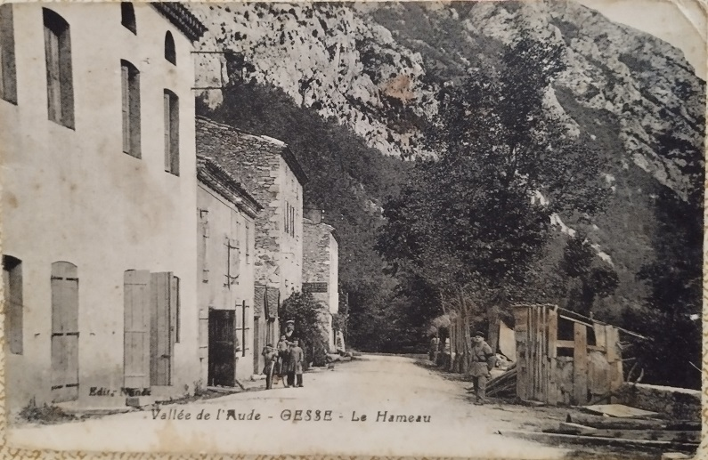
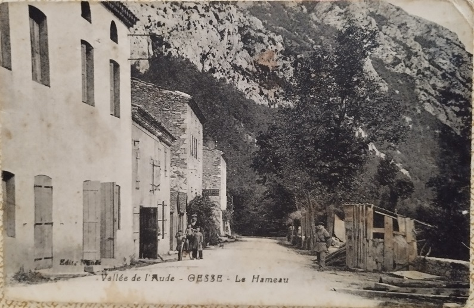


Vallée de l'Aude : ruines de Gesse
Le château de Gesse et facile d'accès à partir de la route de Bessède (D20) - deuxième virage en épingle à cheveu en montant directement depuis Gesse.
Le chemin commence au panneau "Col du Castel"
Au dessus du panneau le piton rocheux accueillant le haut du château
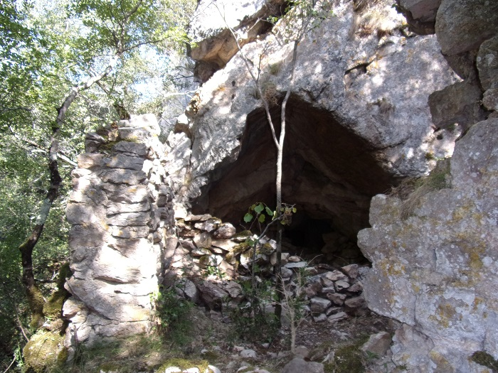grotte en dessous du piton rocheux
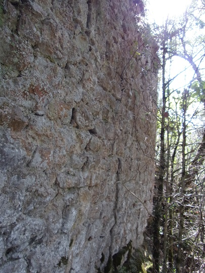Mur d'une des maisons précédant l'accès au piton, ce mur pouvait servir de fortification au vu de la qualité de son appareillage
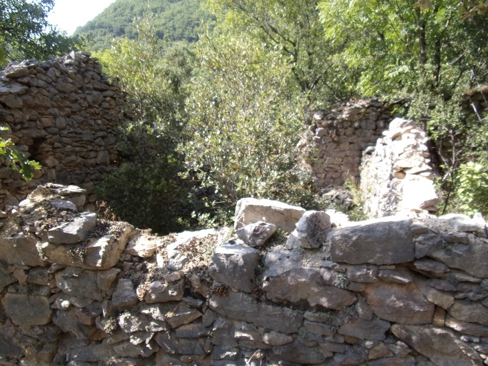maison en question, vue par dessus
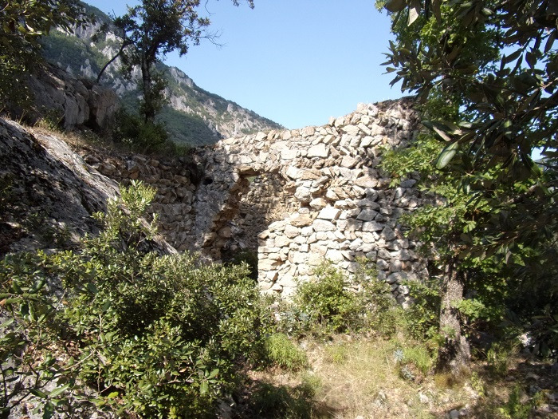Entrée de la chapelle
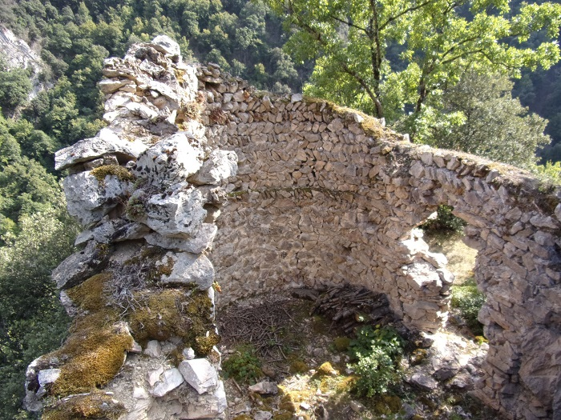chapelle vue d'ensemble
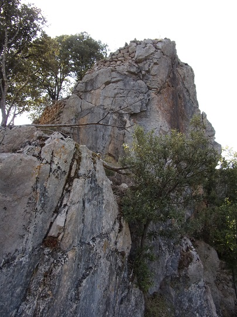Piton rocheux vue d'en bas
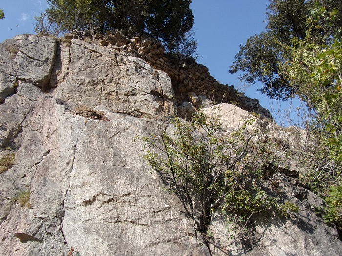Piton rocheux vue d'en bas, autre angle de vue
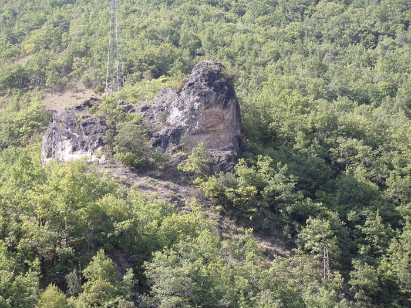Vue sur le rocher en forme de dome aperçu du hameau
Si j'ai grimpé sur le piton rocheux qui a vraissemblablement accueilli la tour de guet du château, je déconseille vivement l'aventure. Le piton ne présente pas vraiment d'accès facile, la pierre est très friable et donc finalement en montant j'ai contribué à l'usure du lieu...
Les photos suivantes sont prises depuis le haut du piton rocheux
Vue vers l'Amont de l'Aude
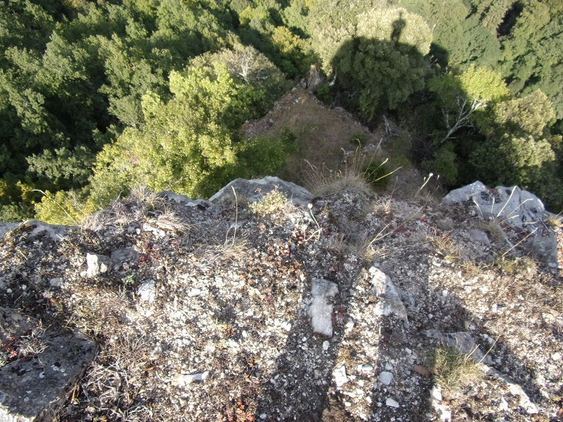Vue vers les constructions en contre bas et jeux d'ombre
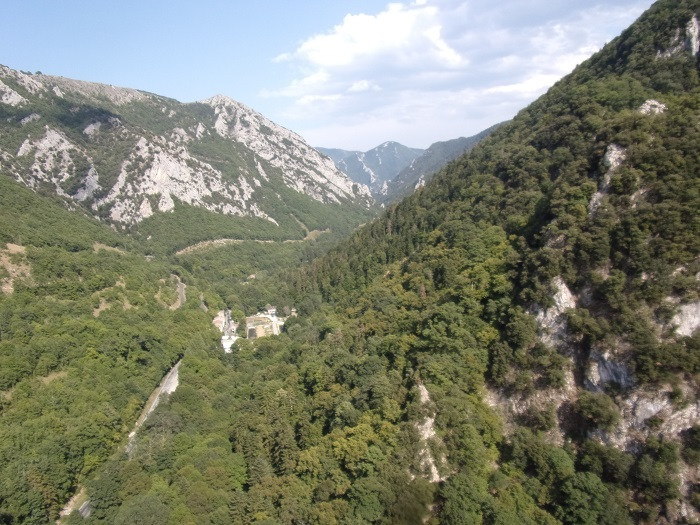Vue vers l'aval de l'Aude
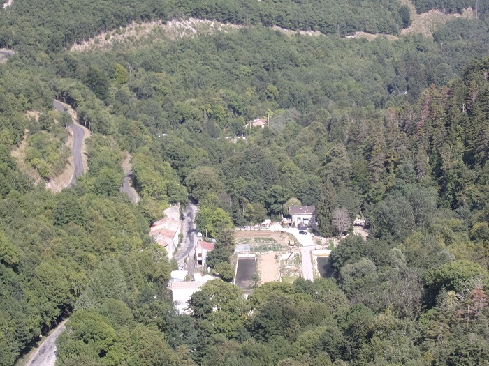les bassins de l'ancienne pisciculture et les maisons du hameau de Gesse
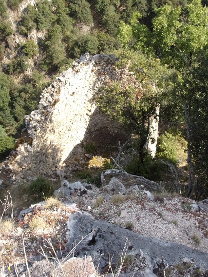Vue de la chapelle
L'accès au piton

"Marches" d'accès au piton
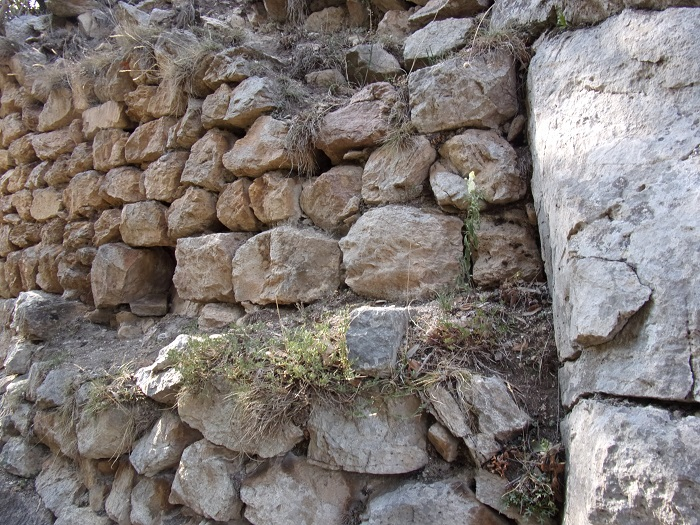Murets de soutainement au flanc du piton
Et pour les connaisseurs
Le lieu incontournable du hameau
A ne manquer sous aucun prétexte
Le merveilleux, le fabuleux, l'innommable tapis de Gesse
A proximité de l'entrée de l'ancienne pêcherie
1 Carte de la Cerdagne françoise de la Cerdagne espagnole, la vallée de Carol, le Capcir, le Donézan, et partie de la Catalogne, du Valespir, du Conflent, du Languedoc et de la comté de Foix - Roussel (16..-1733 ; ingénieur) et La Blottière, François de (1673-1739 ; Cartographe - Date d'édition : 1718-1719